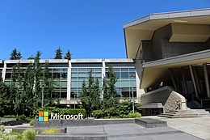
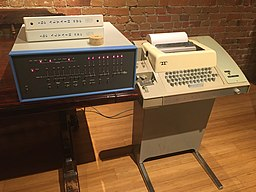
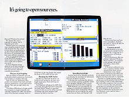
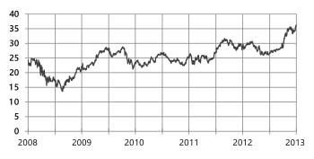

From Wikipedia, the free encyclopedia
|
|
|
|  | |
| Type | Public |
| Traded as | |
| ISIN | US5949181045 |
| Industry | |
| Predecessor | Traf-O-Data |
| Founded | April 4, 1975; 45 years ago in Albuquerque, New Mexico, U.S. |
| Founders | |
| Headquarters | One Microsoft Way Redmond, Washington, U.S. |
| Area served | Worldwide |
| Key people | |
| Products |
|
| Services |
|
| Revenue | US$143 billion[1] (2020) |
| Operating income | US$53 billion[1] (2020) |
| Net income | US$44.3 billion[1] (2020) |
| Total assets | US$301.3 billion[1] (2020) |
| Total equity | US$118.3 billion[1] (2020) |
| Number of employees | 56,439[2] (2020) |
| Website | www.microsoft.com |
Microsoft Corporation (/ˈmaɪkroʊsɒft/ MY-kroh-soft) is an American multinational technology company with headquarters in Redmond, Washington. It develops, manufactures, licenses, supports, and sells computer software, consumer electronics, personal computers, and related services. Its best known software products are the Microsoft Windows line of operating systems, the Microsoft Office suite, and the Internet Explorer and Edge web browsers. Its flagship hardware products are the Xbox video game consoles and the Microsoft Surface lineup of touchscreen personal computers.
In 2016, it was the world's largest software maker by revenue (currently Alphabet/Google has more revenue).[3] The word "Microsoft" is a portmanteau of "microcomputer software".[4] Microsoft ranked No. 21 in the 2020 Fortune 500 rankings of the largest United States corporations by total revenue.[5] It is considered one of the Big Five technology companies alongside Amazon, Apple, Google, and Facebook.
Microsoft was founded by Bill Gates and Paul Allen on April 4, 1975, to develop and sell BASIC interpreters for the Altair 8800. It rose to dominate the personal computer operating system market with MS-DOS in the mid-1980s, followed by Microsoft Windows. The company's 1986 initial public offering (IPO), and subsequent rise in its share price, created three billionaires and an estimated 12,000 millionaires among Microsoft employees. Since the 1990s, it has increasingly diversified from the operating system market and has made a number of corporate acquisitions, their largest being the acquisition of LinkedIn for $26.2 billion in December 2016,[6] followed by their acquisition of Skype Technologies for $8.5 billion in May 2011.[7]
As of 2015, Microsoft is market-dominant in the IBM PC compatible operating system market and the office software suite market, although it has lost the majority of the overall operating system market to Android.[8] The company also produces a wide range of other consumer and enterprise software for desktops, laptops, tabs, gadgets, and servers, including Internet search (with Bing), the digital services market (through MSN), mixed reality (HoloLens), cloud computing (Azure), and software development (Visual Studio).
Steve Ballmer replaced Gates as CEO in 2000, and later envisioned a "devices and services" strategy.[9] This unfolded with Microsoft acquiring Danger Inc. in 2008,[10] entering the personal computer production market for the first time in June 2012 with the launch of the Microsoft Surface line of tablet computers, and later forming Microsoft Mobile through the acquisition of Nokia's devices and services division. Since Satya Nadella took over as CEO in 2014, the company has scaled back on hardware and has instead focused on cloud computing, a move that helped the company's shares reach its highest value since December 1999.[11][12]
Earlier dethroned by Apple in 2010, in 2018 Microsoft reclaimed its position as the most valuable publicly traded company in the world.[13] In April 2019, Microsoft reached the trillion-dollar market cap, becoming the third U.S. public company to be valued at over $1 trillion after Apple and Amazon respectively.[14]
Further information: History of Microsoft and Timeline of Microsoft
See also: Microsoft Windows version history
1972–1985: Founding
Childhood friends Bill Gates and Paul Allen sought to make a business using their skills in computer programming.[16] In 1972, they founded Traf-O-Data, which sold a rudimentary computer to track and analyze automobile traffic data. Gates enrolled at Harvard University while Allen pursued a degree in computer science at Washington State University, though he later dropped out to work at Honeywell.[17] The January 1975 issue of Popular Electronics featured Micro Instrumentation and Telemetry Systems's (MITS) Altair 8800 microcomputer,[18] which inspired Allen to suggest that they could program a BASIC interpreter for the device. Gates called MITS and claimed that he had a working interpreter, and MITS requested a demonstration. Allen worked on a simulator for the Altair while Gates developed the interpreter, and it worked flawlessly when they demonstrated it to MITS in March 1975 in Albuquerque, New Mexico. MITS agreed to distribute it, marketing it as Altair BASIC.[15]:108, 112–114 Gates and Allen established Microsoft on April 4, 1975, with Gates as CEO,[19] and Allen suggested the name "Micro-Soft", short for micro-computer software.[20][21] In August 1977, the company formed an agreement with ASCII Magazine in Japan, resulting in its first international office of ASCII Microsoft.[22] Microsoft moved its headquarters to Bellevue, Washington in January 1979.[19]
1985–1994: Windows and Office
Microsoft released Microsoft Windows on November 20, 1985, as a graphical extension for MS-DOS,[15]:242–243, 246 despite having begun jointly developing OS/2 with IBM the previous August.[30] Microsoft moved its headquarters from Bellevue to Redmond, Washington on February 26, 1986, and went public on March 13,[31] with the resulting rise in stock making an estimated four billionaires and 12,000 millionaires from Microsoft employees.[32] Microsoft released its version of OS/2 to original equipment manufacturers (OEMs) on April 2, 1987.[15] In 1990, the Federal Trade Commission examined Microsoft for possible collusion due to the partnership with IBM, marking the beginning of more than a decade of legal clashes with the government.[33] :243–244 Meanwhile, the company was at work on Microsoft Windows NT, which was heavily based on their copy of the OS/2 code. It shipped on July 21, 1993, with a new modular kernel and the 32-bit Win32 application programming interface (API), making it easier to port from 16-bit (MS-DOS-based) Windows. Microsoft informed IBM of Windows NT, and the OS/2 partnership deteriorated.[34]
See also: Criticism of Microsoft; Internet censorship in China; and Embrace, extend, and extinguish
Board of directors
The company is run by a board of directors made up of mostly company outsiders, as is customary for publicly traded companies. Members of the board of directors as of July 2020 are Satya Nadella, Reid Hoffman, Hugh Johnston, Teri List-Stoll, Sandi Peterson, Penny Pritzker, Charles Scharf, Arne Sorenson, John W. Stanton, John W. Thompson, Emma Walmsley and Padmasree Warrior.[134] Board members are elected every year at the annual shareholders' meeting using a majority vote system. There are four committees within the board which oversee more specific matters. These committees include the Audit Committee, which handles accounting issues with the company including auditing and reporting; the Compensation Committee, which approves compensation for the CEO and other employees of the company; the Governance and Nominating Committee, which handles various corporate matters including nomination of the board; and the Regulatory and Public Policy Committee, which includes legal/antitrust matters, along with privacy, trade, digital safety, artificial intelligence, and environmental sustainability. [135]
On March 13, 2020, Gates announced that he is leaving the board of directors of Microsoft and Berkshire Hathaway in order to focus more on his philanthropic efforts. According to Aaron Tilley of The Wall Street Journal this is "marking the biggest boardroom departure in the tech industry since the death of longtime rival and Apple Inc. co-founder Steve Jobs."[136]
Chief executives
Financial
When Microsoft went public and launched its initial public offering (IPO) in 1986, the opening stock price was $21; after the trading day, the price closed at $27.75. As of July 2010, with the company's nine stock splits, any IPO shares would be multiplied by 288; if one were to buy the IPO today, given the splits and other factors, it would cost about 9 cents.[15]:235–236[138][139] The stock price peaked in 1999 at around $119 ($60.928, adjusting for splits).[140] The company began to offer a dividend on January 16, 2003, starting at eight cents per share for the fiscal year followed by a dividend of sixteen cents per share the subsequent year, switching from yearly to quarterly dividends in 2005 with eight cents a share per quarter and a special one-time payout of three dollars per share for the second quarter of the fiscal year.[140][141] Though the company had subsequent increases in dividend payouts, the price of Microsoft's stock remained steady for years.[141][142]
| Year | Revenue in mil. US$ [151] |
Net income in mil. US$[151] |
Total Assets in mil. US$[151] |
Employees[151] |
|---|---|---|---|---|
| 2005 | 39,788 | 12,254 | 70,815 | 61,000 |
| 2006 | 44,282 | 12,599 | 69,597 | 71,000 |
| 2007 | 51,122 | 14,065 | 63,171 | 79,000 |
| 2008 | 60,420 | 17,681 | 72,793 | 91,000 |
| 2009 | 58,437 | 14,569 | 77,888 | 93,000 |
| 2010 | 62,484 | 18,760 | 86,113 | 89,000 |
| 2011 | 69,943 | 23,150 | 108,704 | 90,000 |
| 2012 | 90,000 | 16,978 | 121,271 | 94,000 |
| 2013 | 77,849 | 21,863 | 142,431 | 99,000 |
| 2014 | 86,833 | 22,074 | 172,384 | 128,000 |
| 2015 | 93,580 | 12,193 | 174,472 | 118,000 |
| 2016 | 91,154 | 20,539 | 193,468 | 114,000 |
| 2017 | 96,571 | 25,489 | 250,312 | 124,000 |
| 2018 | 110,360 | 16,571 | 258,848 | 131,000 |
| 2019 | 125,843 | 39,240 | 286,556 | 144,106 |
Headquarters
The corporate headquarters, informally known as the Microsoft Redmond campus, is located at One Microsoft Way in Redmond, Washington. Microsoft initially moved onto the grounds of the campus on February 26, 1986, weeks before the company went public on March 13. The headquarters has since experienced multiple expansions since its establishment. It is estimated to encompass over 8 million ft2 (750,000 m2) of office space and 30,000–40,000 employees.[203] Additional offices are located in Bellevue and Issaquah, Washington (90,000 employees worldwide). The company is planning to upgrade its Mountain View, California, campus on a grand scale. The company has occupied this campus since 1981. In 2016, the company bought the 32-acre campus, with plans to renovate and expand it by 25%.[204] Microsoft operates an East Coast headquarters in Charlotte, North Carolina.[205]
Logo
Microsoft adopted the so-called "Pac-Man Logo," designed by Scott Baker, in 1987. Baker stated "The new logo, in Helvetica italic typeface, has a slash between the o and s to emphasize the "soft" part of the name and convey motion and speed."[210] Dave Norris ran an internal joke campaign to save the old logo, which was green, in all uppercase, and featured a fanciful letter O, nicknamed the blibbet, but it was discarded.[211] Microsoft's logo with the tagline "Your potential. Our passion."—below the main corporate name—is based on a slogan Microsoft used in 2008. In 2002, the company started using the logo in the United States and eventually started a television campaign with the slogan, changed from the previous tagline of "Where do you want to go today?"[212][213][214] During the private MGX (Microsoft Global Exchange) conference in 2010, Microsoft unveiled the company's next tagline, "Be What's Next."[215] They also had a slogan/tagline "Making it all make sense."[216]
a b c d e "FY20 Q4 - Press Releases - Investor Relations". Microsoft Investor Relations. Microsoft. July 22, 2020. Retrieved August 19, 2020.
https://news.microsoft.com/facts-about-microsoft/. Retrieved August 28, 2020. Missing or empty |title= (help)